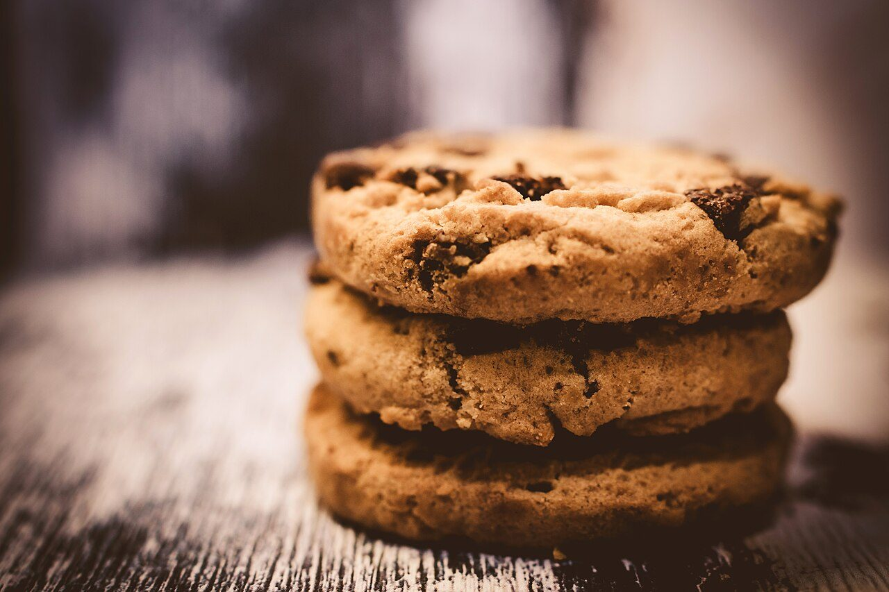

制作側の連想
ランチボックスの部位を、配置図にしてみる
このサイトは、中身を入れて持ち運ぶ、ふた付きの箱・ランチボックスを図にしたつもりで作りました。六つの部位に番号をふり、上の図と並べています。制作側の連想で、お店の理念・由来とは無関係です。実際の製品の仕様を示すものではありません。
凡例
六つの部位
- 1ふた本体の口をおおう、平らな板状の部分。
- 2空気穴(スチームベント)ふたについた小さな穴や弁。中の空気の出入りを受け持つ部分。
- 3パッキンふたと本体のすき間をふさぐ、弾力のある輪っか。
- 4仕切り本体の中をいくつかの区画にわける、取り外せる板。
- 5本体中身を入れる、箱形のいちばん大きな部分。
- 6ロックバンドふたと本体をとめて、開かないようにする帯。
写真(イメージ)
写真(イメージ)




写真はイメージです。お店のものではありません。
ご案内
お店のこと(確認できたものだけ)
| 所在地 | 〒720-0046 広島県福山市今町１−２８ |
|---|---|
| 電話 | 準備中 |
| 営業時間 | 準備中 |
| 定休日 | 準備中 |
| ご予約 | 準備中 |
| 駐車場 | 準備中 |
| SNS | Instagram @sorairo.bread |